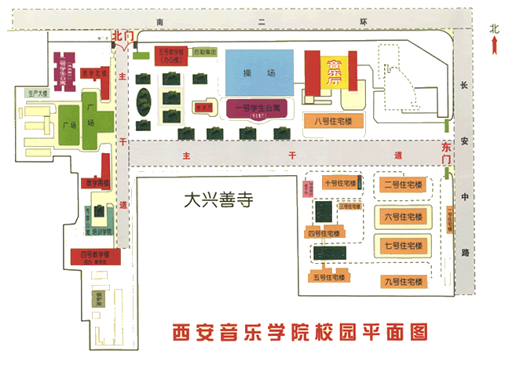

西安音乐学院
西安音乐学院坐落于世界历史文化名城古都西安。学院隶属陕西省教育厅，是一所培养音乐舞蹈艺术专门人才的全日制普通高等学校，是全国9所独立设置的音乐专业院校之一，也是西北地区唯一一所独立建制的高等音乐学府。
学院创建于1949年。前身是贺龙元帅在晋绥边区创建的“西北军政大学音乐部”。1950年改称“西北艺术学院”；1953年调整为“西北艺术专科学校”；1956年学校音乐、美术两系分别建校，音乐系改建为“西安音乐专科学校”，1980恢复 “西安音乐学院”建制。现设有艺术学理论和音乐与舞蹈学2个一级学科、10个二级学科硕士学位授权点，9个本科专业。设有音乐学系、作曲系、声乐系、管弦系、民乐系、钢琴系、舞蹈系、音乐教育学院、现代音乐学院、视唱练耳教研室 、基础部、附中、研究生部、艺术学理论研究室等14个院系（部、室），以及陕西（高校）哲学社会科学重点研究基地——西北民族音乐研究中心，还有西安音乐学院陕西爱乐乐团、交响乐团、交响管乐团、民族管弦乐团、西安鼓乐艺术团、 秦筝艺术团和合唱团等艺术实践团体。近年来，学院不断加强业余音乐培训，已成为西北地区社会音乐推广 中心。现有全日制学生4750人，其中，本科生3836人、研究生420人、附中学生494人。
60余年来，学院已建立起一支实力雄厚的师资和教学管理队伍，在教学、科研、创作、 研究等方面，取得累累硕果。现有教职工543人，其中，专任教师356人，具有正高级职称57人、副 高级职称119人。具有博士、硕士以上学历的比例达60%，享受国务院特殊津贴专家8人 ，陕西省“百人计划”专家、省级突出贡献专家、教学名师等10人。在研国家级、省部级科 研项目30多项，先后荣获国家科技进步二等奖，省级科技进步一等奖、教学成果一等奖， 威尔第国际声乐比赛金奖，中国金唱片奖，梅花奖，CCTV电视歌手大奖赛美声唱法金奖、 合唱银奖，中国音乐金钟奖合唱金奖，CCTV电视舞蹈大奖赛铜奖，意大利中提琴比赛特等 奖，国际双簧乐器协会比赛一等奖等。
建院以来，学院坚持高水平、有特色的办学方向，以人才培养为已任，已成为国家培养高层次音乐舞蹈专业 人才、产出高水平科研成果的重要基地。现有国家级专业综合改革试点专业、精品资源共享课、大学生校外实践基 地、省级教学团队、专业综合改革试点、教学改革研究项目、人才培养模式创新实验区、研究基地、重点学科 、精品课程等40多个；开设了“乐府讲坛”、“博雅论坛”两个开放性学术交流平台；建有两个独具特色的博物 馆——西北民族音乐文化展馆和西安鼓乐学术馆。在2006年教育部本科教学工作水平评估中获优秀。特色专业教 学中，如西安鼓乐、陕北大唢呐分获文化部中国民族器乐民间乐种组合展演一、二等奖。
多年来，学院着力加强国际音乐文化交流，与欧洲、美洲、亚洲十余所著名音乐学院和艺术院校保持着良好的合作办 学关系，承担培养外国留学生工作。
学报《交响》创刊于1982年，是面对国内外公开发行的综合性音乐学术季刊，现为“中文核心期刊要目总览（第六版）”入编期刊。
学院先后被评为陕西省“城市先进基层党组织”、“民主管理先进单位”、“重点学科建设先进单位”、“依法治校示范校”、“省级文明校园”。
当前，西安音乐学院以深化教育综合改革为契机，积极主动融入陕西地方经济社会、文化艺术事业发展和国家“一带一路”发展战略，正朝着建设高水平、有特色音乐学院而努力奋斗。
（更新日期：2016年3月2日）
李映方：党委书记
王 真：党委副书记、代理院长
张立杰：党委副书记、副院长
王 平：院党委委员、纪委书记
安金玉：院党委委员、副院长
韩兰魁：院党委委员、副院长
崔炳元：院党委委员、副院长
冯力斌：院党委委员
- 首页
- 上页
- 下页
- 尾页
学院平面图
地址：西安市长乐中路108号
电话：029-85239738